Each name opens the same personal intro page and video.
Lycee Korba class memories
The future runs on algorithms, we run the future.
A page for the class, the photos, the voices, and the little moments that stay long after 2024.
A gallery of class memories, shown fully without cutting people out.
Subtle soundtrack and interaction tones for a more cinematic feeling.
Gallery
A wall of memories, kept fully in frame.
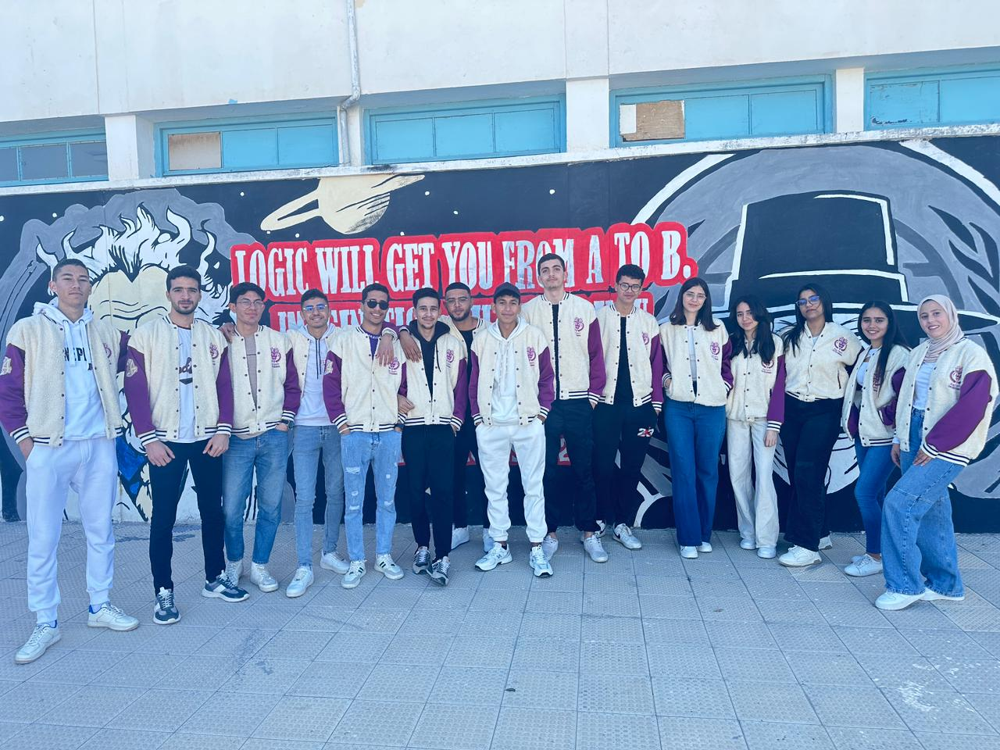
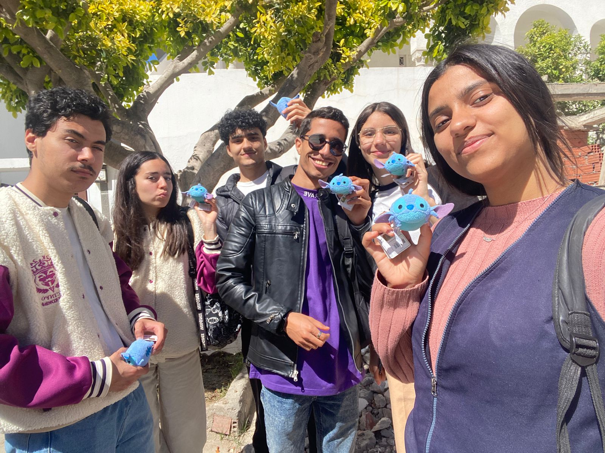
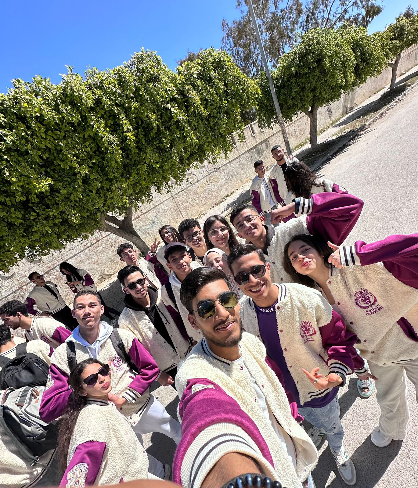
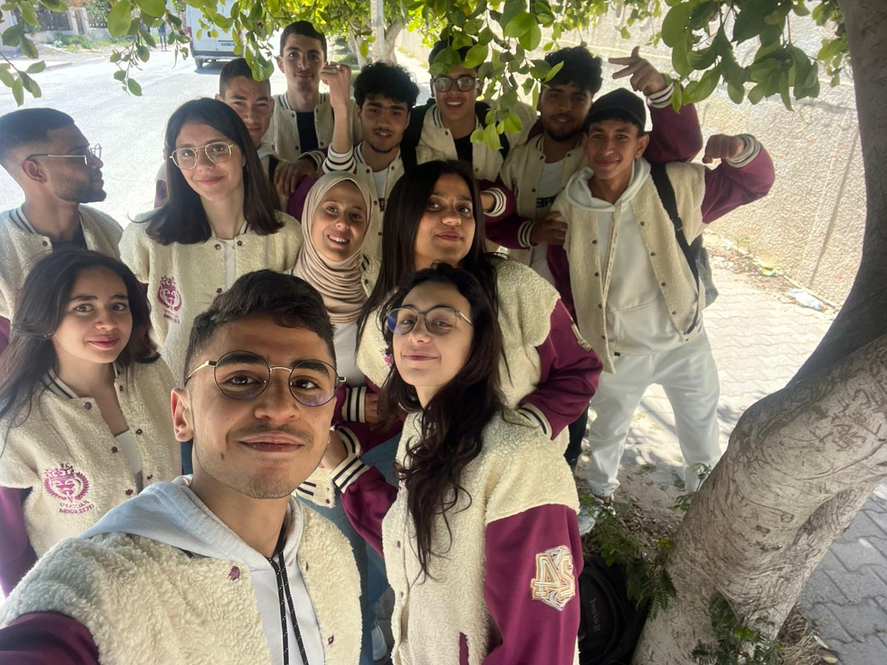
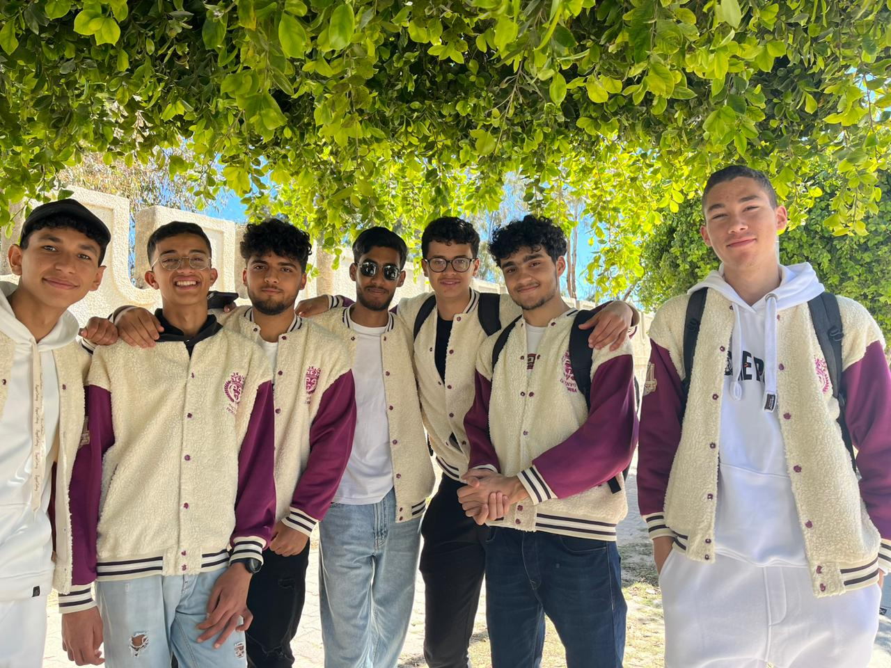
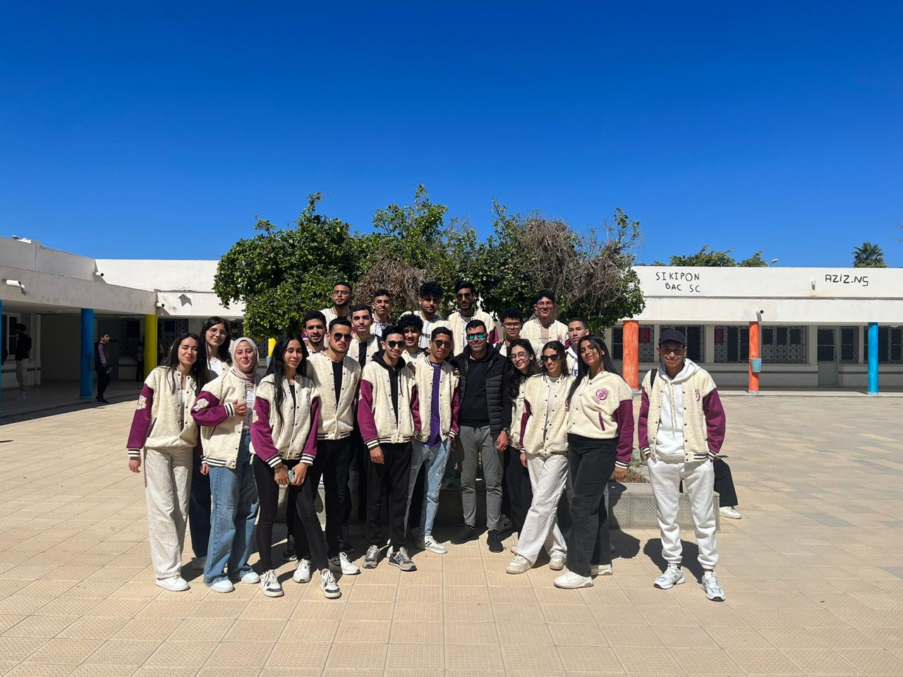

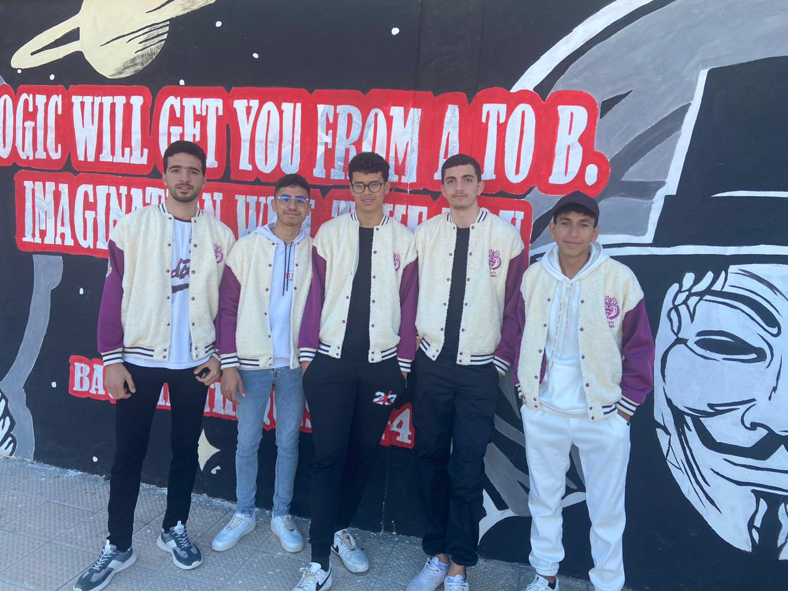
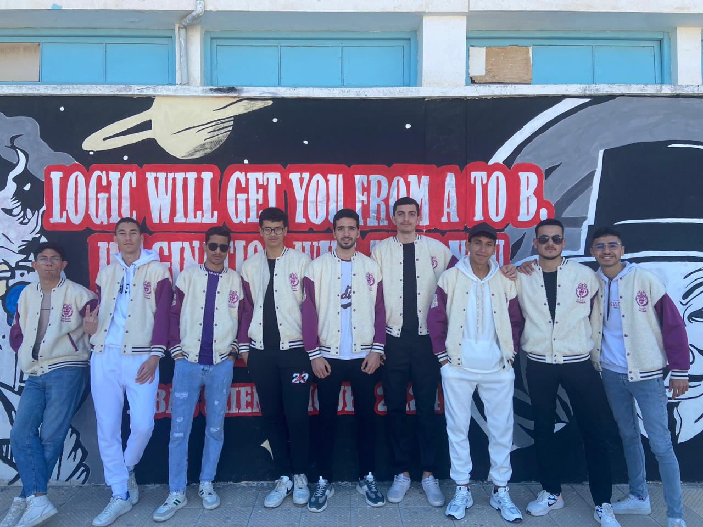
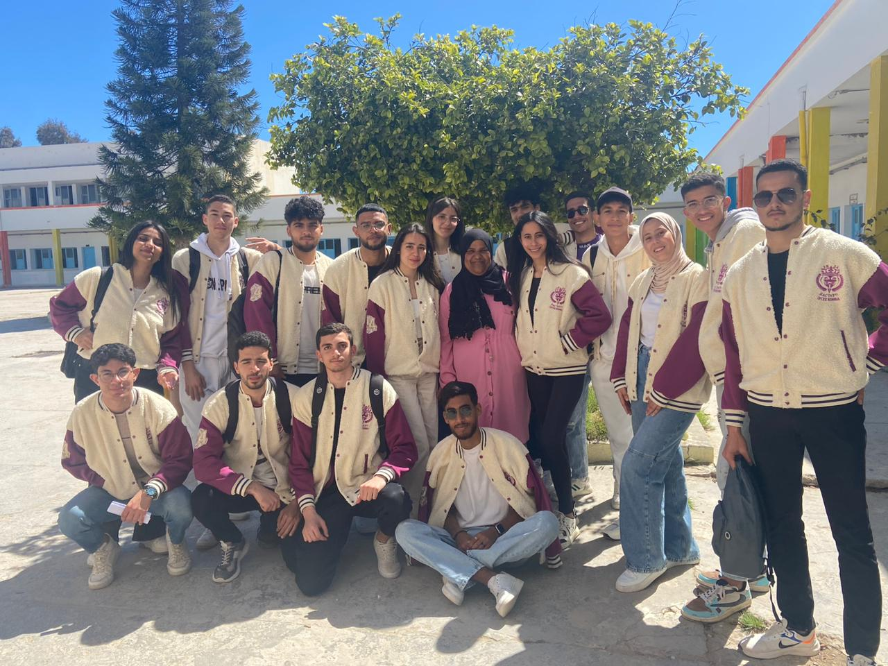
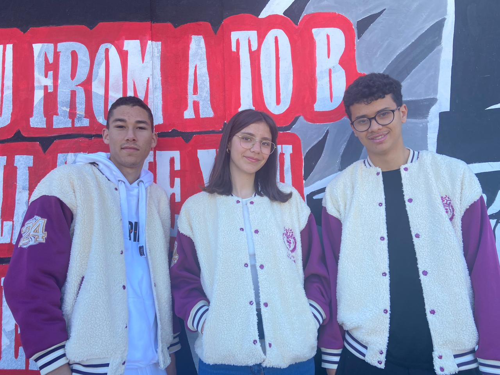
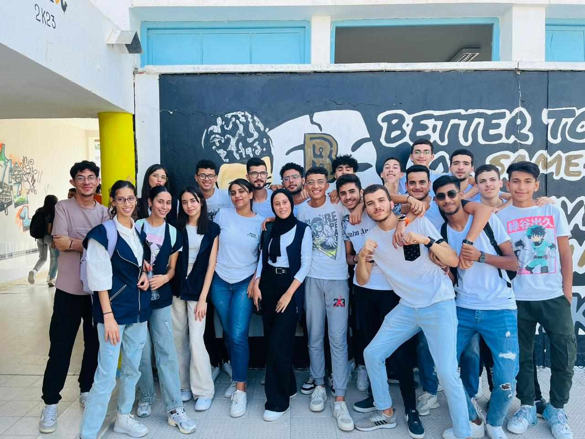
Class frame
The group, the energy, the memory.
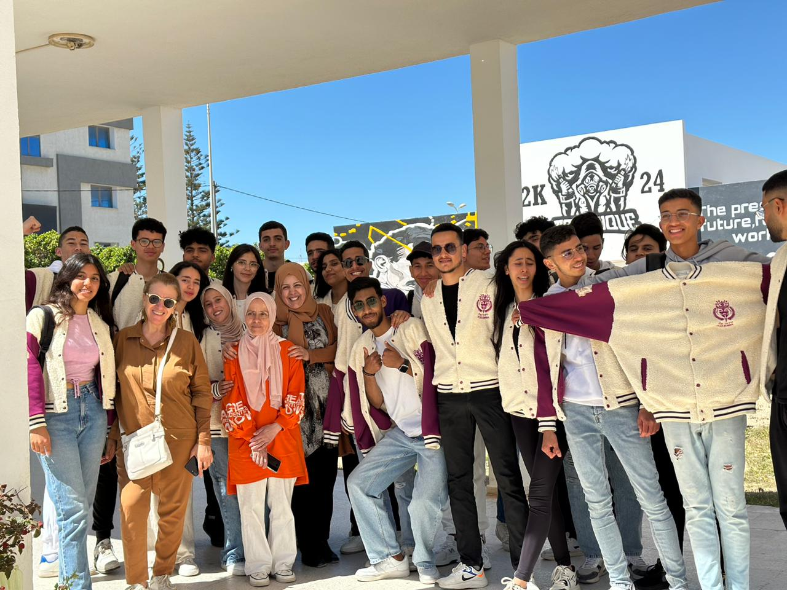
Highlight
A closer memory from the same year.
Profiles
Every personal page opens its original intro video.
- 01
Ahmed Souissi
Open profile - 02
Boudhirwa Abdou
Open profile - 03
Omar Kochtane
Open profile - 04
Amen Allah Sehili
Open profile - 05
Abd Rahmen Matoug
Open profile - 06
Alae Oueslat
Open profile - 07
Amal Haffar
Open profile - 08
Anas Chaouch
Open profile - 09
Aziz Nsir
Open profile - 10
Bahri Souha
Open profile - 11
Bani Yosra
Open profile - 12
Cirine Bani
Open profile - 13
Dali Ben Abdeltif
Open profile - 14
Med Aziz Dridi
Open profile - 15
Fatnasy Amanallah
Open profile - 16
Mohamed Amin Hameda
Open profile - 17
Hadil Hamdoun
Open profile - 18
Hamza Barkit
Open profile - 19
Islem Boulaaba
Open profile - 20
Khalil Jadlaoui
Open profile - 21
Mahdi Yedes
Open profile - 22
Lina Nechi
Open profile - 23
Mohamed Ben Hassen
Open profile - 24
Mouldi Hemdene
Open profile - 25
Mohamed Ben Othmen
Open profile - 26
Mtar Rayane
Open profile - 27
Nassim Charabi
Open profile - 28
Nassim Mansri
Open profile - 29
Ranime Dhifallah
Open profile - 30
Rayen Hjaij
Open profile - 31
Souheil Belkhel
Open profile - 32
Yassine Jazi
Open profile - 33
Yassine Khemir
Open profile - 34
Yassine Saidi
Open profile - 35
Youssef Ben Othmen
Open profile